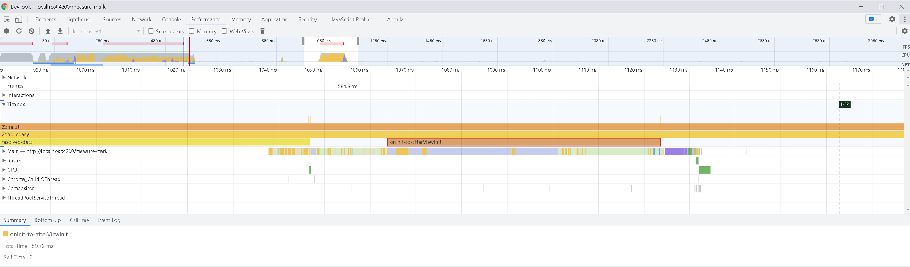

<div class="grid-container">
  <mat-grid-list cols="2" rowHeight="350px">
    <mat-grid-tile>
      <mat-card class="dashboard-card">
        <mat-card-header>
          <mat-card-title>
            <h2>Creating Marks and Measures 📏 </h2>
          </mat-card-title>

        </mat-card-header>
        <mat-card-content>
          <div>
            <ul>
              <li>Create a starting mark - performance.mark('my-start-mark')</li>
              <li>Create an ending mark - performance.mark('my-end-mark')</li>
                <ul>
                  <li>
                    <p>performance.mark() Creates a timestamp in the browser's performance entry buffer with the given name.</p>
                  </li>
                </ul>
              <li>Create a measure of the marks - performance.measure('my-measure', 'my-start-mark', 'my-end-mark')</li>
                <ul>
                  <li>
                    <p>The measure() method creates a named timestamp in the browser's performance entry buffer between marks, the navigation start time, or the current time.
                    </p>
                  </li>
                </ul>
            </ul>
          </div>
        </mat-card-content>
      </mat-card>
    </mat-grid-tile>
    <mat-grid-tile [colspan]="1" [rowspan]="1">
      <mat-card class="dashboard-card">
        <mat-card-header>
          <mat-card-title>
            Mark & Measure Angular Lifecycle Hooks 🐟
          </mat-card-title>
        </mat-card-header>
        <mat-card-content class="dashboard-card-content">
          <pre>
<code class="language-js">
  performance.mark('onInit');
  performance.mark('afterViewInit');
  performance.measure('onInit-to-afterViewInit', 'onInit', 'afterViewInit');
</code>
          </pre>
        </mat-card-content>
      </mat-card>
    </mat-grid-tile>

    <mat-grid-tile [colspan]="2" [rowspan]="2">
      
    </mat-grid-tile>
  </mat-grid-list>
</div>
